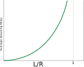

Again consider a TDM Circuit Switching network. If only one person is transmitting, he gets one slot per frame. Which means his transmission rate will be a fraction of the total bandwidth, despite the rest of the bandwidth not being utilized.
What we can understand from this is that Packet Switching allocates resources ON DEMAND and promotes more effecient usage of bandwidth. However, the arrival order could be wrong in Packet Switching and the delays can be non-uniform. Some argue that this makes Packet Switching inferior for real time applications like video calling.
Suppose \(a\) packets arrive at a node every second. Also for the sake of discussion, assume that the size of all packets is uniform at \(L \frac{bits}{packet}\). Then the number of bits arriving at that node every second, is \(La\) - this is the number of bits that enter the node every second. Now suppose the transmission rate of the node is \(R{bits}{second}\) - this is the number of bits that exit a node every second. The ratio of these two quantities - \(\frac{LA}{R}\) is called the traffic intensity. This ratio determines queuing delays. If \(\frac{La}{R} \le 1\) then there are no to minimal queuing delays. On the other hand if \(\frac{La}{R} \gt 1\) then queues build up and there are high queuing delays
In practice however, packet arrival rate is not fixed. Packets arrive at random times. So calculating queueing delay is a bit more complex in practice. One thing you do see however is that as traffic intensity gets closer and closer to 1, the average queueing delay in the network increases rapidly as long queues start building up.

The message from the Application Layer is given to the Transport Layer, which encapsulates it by adding a header to it. Thus the message becomes a segment.Similary, the Transport Layer gives its segment to the Network Layer, which further encapsulates the segment, turning it into a datagram. Finally the Network Layer passes on its datagram to the Link Layer. The Link Layer in turn encapsulates the datagram, by adding its header and thus turning it into a frame. Finally the frame is sent over the physical layer to the destination.